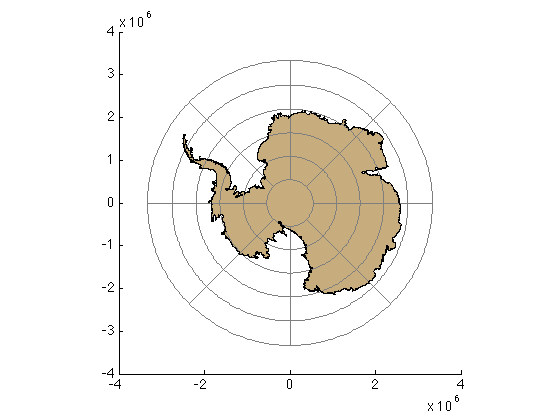

graticuleps documentation
graticuleps is part of Antarctic Mapping Tools for Matlab (Greene et al., 2017). Click here for a complete list of functions in AMT.
The graticuleps places a graticule on a polar stereographic cartesian coordinate map of the southern hemisphere.
Contents
Syntax
graticuleps graticuleps(lats,lons) graticuleps(...,'km') graticuleps(...,LineProperty,LineValue) h = graticuleps(...)
Description
graticuleps places a grey graticule on a cartesian-coordinate map.
graticuleps(lats,lons) specifies lines of latitude and longitude. By default, lats = -80:10:-30 and lons = -150:30:180.
graticuleps(...,'km') plots in polar stereographic kilometers instead of the default meters.
graticuleps(...,LineProperty,LineValue) formats line properties such as color, linewidth, linestyle, etc.
h = graticuleps(...) returns a graphics handle h of the plotted graticule.
Example 1: Simplest case
Simply place a graticule on a cartesian coordinate map:
graticuleps
And if you'd like, you can overlay a light blue (RGB values obtained with the rgb function) patchps of the continent:
load AMTdata patchps(glat{1},glon{1},rgb('light blue')) xlabel 'eastings (m)' ylabel 'northings (m)'
Example 2: Specify parallels and meridians
Place labels every 5 degrees of latitude and every 45 degrees of longitude:
figure
graticuleps(-85:5:-60,-135:45:180)
patchps(glat{1},glon{1},rgb('toupe'))
 Format lines and plot in polar stereographic kilometers
Some data sets are in polar stereographic kilometers instead of meters. And sometimes you want your graticule to be a fat red dotted line placed atop the continent:
figure
patchps(glat{1},glon{1},rgb('mauve'),'km')
graticuleps(-85:5:-60,... % Plot every 5 degrees latitude,
-135:45:180,... % every 45 degrees longitude,
'r:',... % garish red dotted line,
'linewidth',2,... % make that a fat garish red dotted line,
'km'); % in polar stereographic kilometers.
xlabel 'eastings (km)'
ylabel 'northings (km)'
Citing AMT
If this function or any other part of Antarctic Mapping Tools is useful for you, please cite the paper that describes AMT.
Greene, C. A., Gwyther, D. E., & Blankenship, D. D. Antarctic Mapping Tools for Matlab. Computers & Geosciences. 104 (2017) pp.151-157. doi:10.1016/j.cageo.2016.08.003.
Author Info
This function was written by Chad A. Greene of the University of Texas at Austin's Intitute for Geophysics, July 2015. It is included in Antarctic Mapping Tools for Matlab.